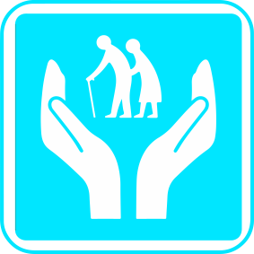
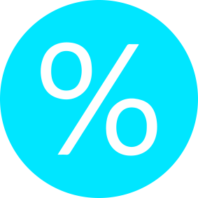

Подбор опытных квалифицированных сиделок. Помощь в грамотной организации ухода за близкими на дому или в больнице по доступной цене.
Срочный подбор сиделки за 2 часа
услуги и их стоимость
Сиделка с проживанием
Постоянное присутствие сиделки обеспечивает квалифицированную помощь на дому, круглосуточный контроль состояния здоровья и регулярное оповещение семьи обо всех происходящих изменениях у подопечного.
от 1300 в сутки
Сиделка в больницу
Наши сиделки работают во всех больницах города с самыми сложными случаями. Ваш близкий человек будет под постоянным наблюдением, в чистоте и спокойной обстановке. Все наши сиделки обладают достаточными навыками и опытом для работы в больнице. Практически у всех есть действующая медицинская книжка. В экстренных случаях можем прислать сиделку в больницу срочно, без заключения договора и без предоплаты.
от 150 в час, от 2300 в сутки
Приходящая сиделка
Если сиделка нужна только на определенное количество часов в сутки, приходящая сиделка - один из вариантов обеспечить полноценный уход на дому вашему родственнику.
Сиделка-компаньонка
Идеальное решение, если ваш близкий человек не нуждается в медицинской помощи, но ему нужна психологическая и моральная поддержка и помощь по дому.
от 150 в час
ДОПОЛНИТЕЛЬНЫЕ УСЛУГИ
Мы готовы взять на себя
все заботы по уходу за подопечным
О НАШЕМ ЦЕНТРЕ
Подберём порядочную сиделку с проверенными рекомендациями
Преимущества
Входим в Ассоциацию "Патронаж" – официальный поставщик социальных услуг г. Москвы.
Мы лично знаем всех наших сиделок.
Возьмем на себя организацию ухода за вашим близким человеком.
Гибкая система скидок для постоянных клиентов.
наша команда
У нас небольшая команда, которая делает очень важную работу
Антон
Сооснователь ЦСО "Время заботы"
Социальный предприниматель. Неравнодушен к социальной проблеме ухода за больными и престарелыми людьми в нашей стране. Считаю, что в наших силах качественно изменить сферу патронажных услуг в Москве и регионах. Имею сертификат Школы пациента "Уход в реабилитационном периоде"
Наталья
Сооснователь ЦСО "Время заботы"
Имею многолетний опыт работы руководителем пансионата для пожилых людей. Медсестра по образованию, есть диплом социального работника. Я знаю, как оказывать профессиональную помощь пожилым людям и умею это делать. Нередко сама провожу мастер-классы по организации ухода за престарелыми и ограниченно подвижными людьми.
Марина
Старший специалист Центра
Я позитивная, всегда улыбаюсь, знаю волшебные слова, чтобы поднять настроение бабушкам или дедушкам. Работала в пансионате для пожилых людей, начинала сиделкой. Знаю эту работу от и до.
Татьяна
Специалист Центра
Имею больше 11 лет опыта работы в социальных центрах. Сама ухаживала за пожилыми людьми, организовывала работы по уходу за престарелыми людьми и людьми с ограниченными возможностями.
1
Индивидуальный подход к каждому клиенту
Мы учитываем все особенности состояния здоровья подопечного, ваши пожелания, и консультируем по организации правильного ухода. Нам доверяют многие семьи, высокопоставленные госслужащие, известные артисты и предприниматели.
2
Персональный менеджер 24/7
Специалист нашего Центра приедет к вам для знакомства и заключения договора. Он будет вашим персональным менеджером, проконтролирует каждый выход сиделки и всегда на связи с вами по любому вопросу.
3
Опытные сиделки с рекомендациями
Все сиделки проходят собеседование в нашем офисе и строгий отбор. У нас собственная "Школа ухода", где сиделки учатся профессиональному уходу за подопечными и повышают квалификацию. Мы также сотрудничаем со школой патронажного ухода «Внимание и забота».
4
Поэтапная оплата и бесплатные замены сиделки
Вначале вы оплачиваете только аванс в размере не более 20%. Мы доверяем нашим клиентам и работаем по принципу «сначала сиделка, потом оплата». Если сиделка вам не понравится, мы бесплатно заменим на другую.
5
Организация ухода «под ключ»
Наши специалисты помогут вам подобрать средства ухода, установить видеонаблюдение, организовать мытье и стрижку подопечного на дому, перевезти лежачего человека из больницы домой и/или обратно. Профессиональный психолог подготовит подопечного к присутствию и работе сиделки.
6
Профессиональная команда
Наша команда имеет многолетний опыт работы в социальных службах и пансионатах, регулярно участвуем в профессиональных форумах и конференциях. Являемся членом Ассоциации "Патронаж", которая входит в официальный реестр поставщиков социальных услуг города Москвы.
этапы работы
С ЧЕГО НАЧИНАЕМ
1.Специалист центра совместно с вами подбирает сиделку. Организует знакомство семьи и подопечного с кандидатами.
2.Фиксируем стоимость оказания услуг и график работ в договоре. Посмотреть шаблон договора.
3.Вначале вы оплачиваете только аванс - 20% от полной суммы в договоре.
ОКАЗАНИЕ УСЛУГ
4.Сиделка начинает работать по согласованному графику.
5.Специалисты центра ежедневно контролируют работу сиделки.
6.В случае необходимости мы бесплатно произведет замену сиделки.
ЗАВЕРШЕНИЕ / ПРОДЛЕНИЕ ДОГОВОРА
7.Для продления договора достаточно внести предоплату (онлайн или наличными в офисе)
8.Если вам потребуется завершить заказ досрочно, мы возвращаем оставшуюся от предоплаты сумму.
9.Нам важно узнать вашу обратную связь на выполненные услуги.
контакты
Звоните, пишите или приезжайте, мы обязательно поможем.
Адрес на картах:
Москва, ул. Искры, д. 31 корп. 1, БЦ "Искра", офис 217
Часы работы:
Пн - Сб: 9:00 - 21:00, Вс: Выходной